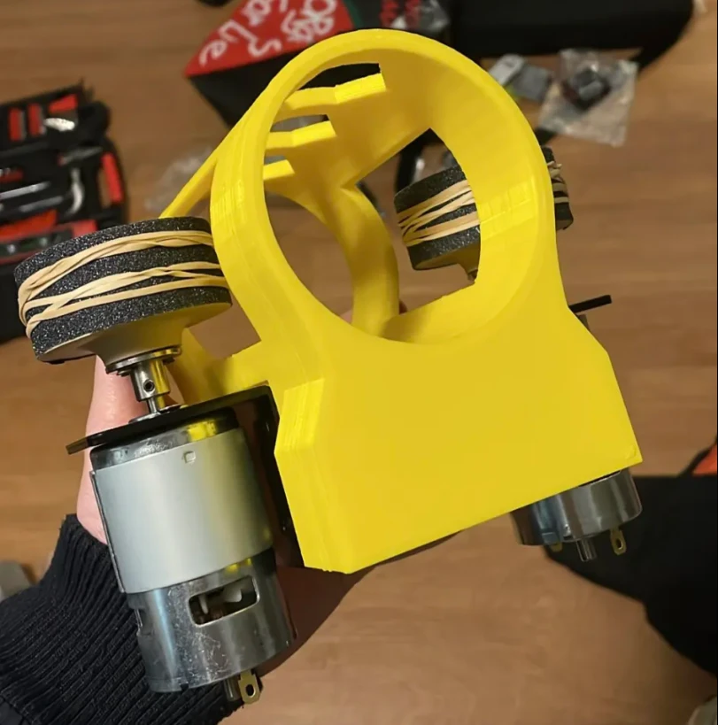
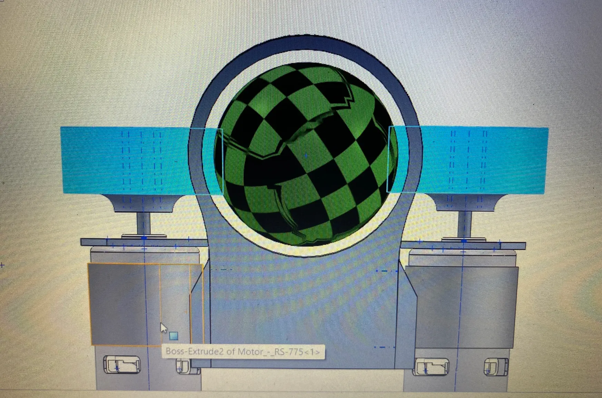
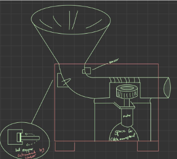
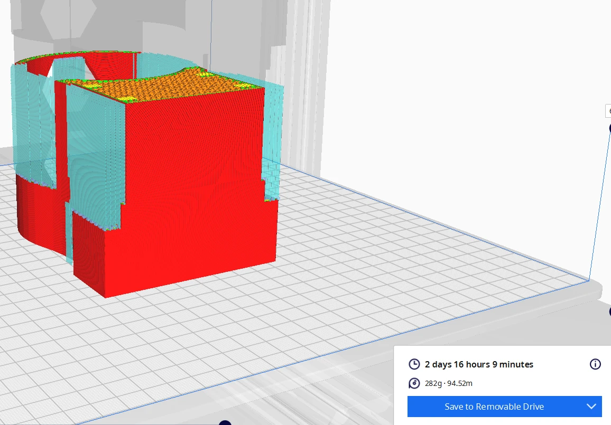
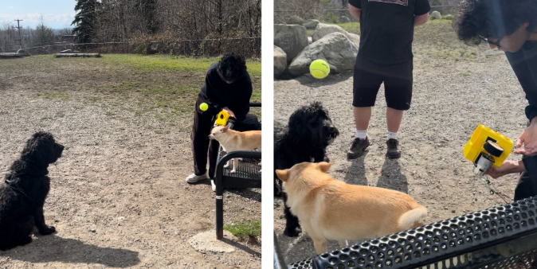

Mechatronics · Product Design · Jan — Apr 2023
Auto Fetch
A four-person team project to design and build an automatic fetch machine — helping people who are physically limited still play fetch with their dogs. I led the circuit design, calculations, assembly, and testing.

Overview
Auto Fetch was a term-long team project — myself, Romano Almazan, Ahmed Badwy, and Brendan Sng, working together as Team Gamma. The product vision was simple to state and harder to build: help people with physical limitations enjoy their pet's company by automating the throw, strengthening the owner-pet bond instead of replacing it. From there we set real specifications — portable, well-balanced, simple enough for both owner and dog to use, modular enough to upgrade later, and battery-powered on something affordable and easy to replace.
We landed on a dual flywheel launcher as our shooting mechanism: two motors spinning in opposite directions on either side of a tube, pinching and launching the ball between them. It was the simplest mechanism on the table and the easiest to tune, which mattered because we ended up tuning it more than once — our first flywheel diameter wasn't enough to hit our 20–30 ft target distance, launching the ball only 8–9 ft in early testing. The fix was straightforward once we diagnosed it: reprinting larger flywheels, which fixed both the distance and a centering problem the smaller wheels had been causing. I handled the circuit design and power calculations behind that mechanism, then led assembly and testing through to the final field test — bringing the machine to a dog park to test it with real dogs, since none of us actually owned one ourselves.
Not everything made it into the final build. A funnel that would've let a dog load the ball into the machine by itself was fully modeled and print-ready, but didn't make the cut once we weighed it against our remaining time and budget. The same went for automation and an active safety sensor — both scoped out in detail (a sensor to lock the launcher if something got within a foot of the nozzle, and logic to release the ball at random intervals so the dog wouldn't fall into a predictable routine), but neither got further than the concept stage before the term ran out. They're the clearest next steps if the project picks back up.
Design & Build
From Sketch to Dog Park
The full process — mechanism design, CAD and 3D printing, assembly, and testing with real dogs.

A Flywheel Launcher
We picked a dual counter-rotating flywheel as our shooting mechanism out of several options we scoped — including magnetic plates and an air-pressure launcher — because it was the easiest to understand, the easiest to adjust, and had real headroom for speed and torque. A ball dropped between the two wheels gets pinched and thrown by their rotation. The tradeoff was that the flywheel diameter directly set our launch distance, which meant our first print — undersized — only managed 8–9 ft against a 20–30 ft target. Reprinting larger flywheels fixed the distance and, as a bonus, solved a centering problem the smaller wheels had been causing.

Sketching Through the Concepts
The design went through several full sketches before we locked in a direction: a first flywheel concept, a version with a conveyor belt to control how the ball reached the wheels, and a version with a slope and stopper mechanism instead. Each one got fully sketched out — motors, funnel, ball path, and all — before we compared them and moved on. The final schematic, drawn from both the side and front, is what we actually built from: funnel on top, flywheel tube below it, and space carved out for the battery pack and wiring.

Modeling and Printing Every Part
The team modeled every component together in SolidWorks — the funnel, the shooting tube, the flywheels, the motor mounts and L-brackets, the insert tube, and the full assembly — before anything got printed. 3D printing turned out to be one of our real constraints: some parts took days to print at the quality we wanted, one alone took over two and a half days by itself, which meant print scheduling had to be planned well ahead of assembly rather than treated as an afterthought.
Putting It Together
Assembly meant fitting the printed flywheels onto their motors and couplings, mounting both into the shooting tube, and wiring the whole thing to a simple battery pack — two 8-pack battery holders, chosen because they were cheap, easy to source, and easy to swap out compared to building in a rechargeable system from the start. I led this stage along with the testing that followed, checking fit at each step (including an early test just to confirm a tennis ball actually seated correctly in the printed tube) before calling it ready for a real test.

Testing at the Dog Park
None of us owned a dog, which made real-world testing one of our bigger scheduling constraints — we relied on friends and their dogs, working around their availability rather than our own. We took the finished launcher to a dog park to test it against actual dogs instead of just a tape measure, which is what caught the early flywheel distance problem in the first place. Theoretical numbers and real results didn't fully agree until we'd run it in the field.
Full Write-Up
Final Report
The full report Team Gamma submitted for this project — concept generation through detailed design, teamworking, and results.